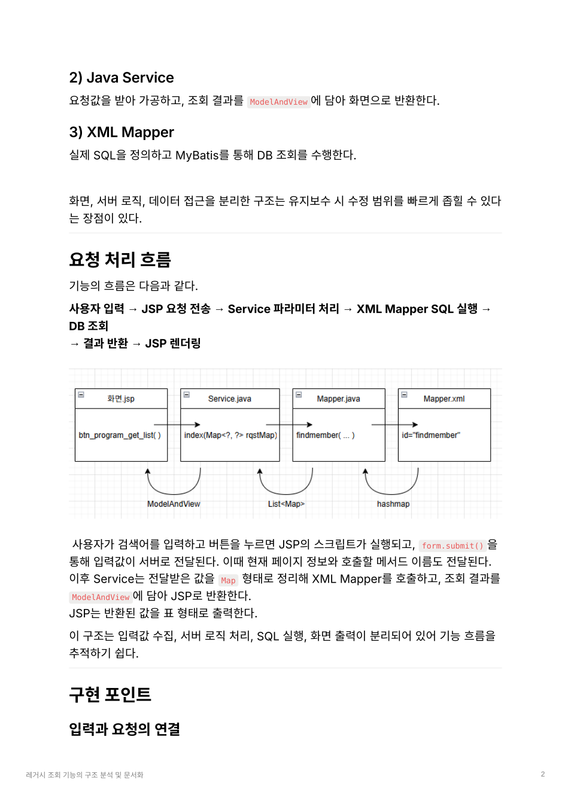
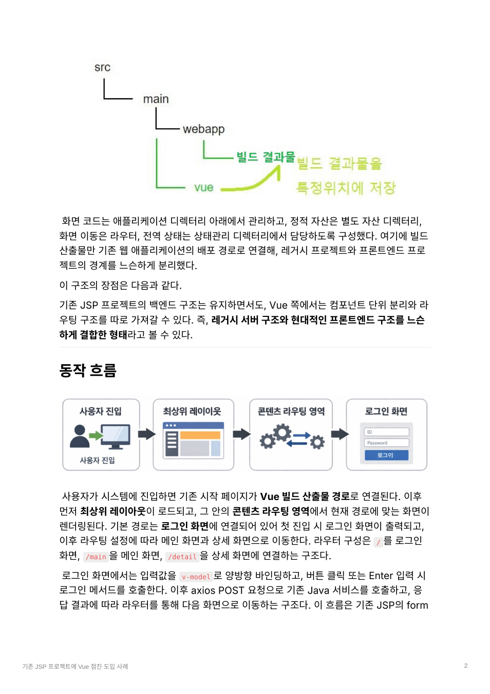
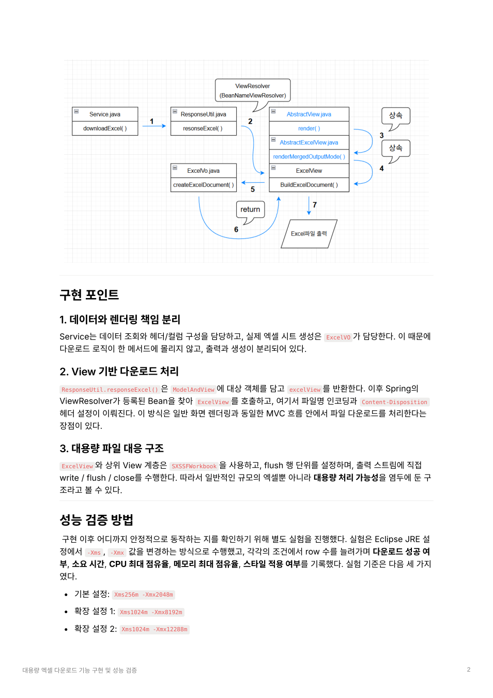

1년간 40여 건의 SR을 처리하며 여신업무 화면, 데이터, 전자리포트, 전자문서 반영 수행
4년 차 · 업무 시스템 실무 경험
업무 시스템 개발자
Backend / Full-stack Developer
Spring, Java, JSP, JavaScript, SQL 기반으로 화면 개발, 데이터 처리, 전자리포트 반영, 테스트, 배포까지 수행해왔습니다. KB증권, 도이치파이낸셜, 롯데캐피탈 프로젝트와 사내 인사급여 시스템 구축을 통해 운영 환경에서 실제로 반영되는 기능을 만드는 역할을 맡았습니다.
도메인
금융 업무 시스템 개발 · 운영 경험
실무 범위
화면 · 데이터 · 리포트 · 테스트 · 배포 연결
강점
구조 분석 · 문서화 · 점진 개선 방식의 문제 해결
Selected Experience
레거시 화면을 WebSquare 기반으로 전환하고, 브라우저 호환성과 업무 화면 정합성 보완
법인 고객 대상 채권 거래 화면을 개발하며 금융 업무 화면 구현 경험 확보
수기 중심 업무를 시스템화하고 급여명세서 Excel 생성과 메일 발송 자동화 구현
Career Snapshot
테크블루제닉(주)
시스템개발부 · 대리 · Full-stack Developer
2022.01 – 2025.05
금융권 고객사 프로젝트를 중심으로 업무 시스템 고도화, 운영성 개발, 전자리포트 반영, 데이터 구조 조정, 테스트와 배포 반영 수행
- 롯데캐피탈: 여신업무 시스템 기능 개선 및 운영 반영
- 도이치파이낸셜: 레거시 화면 전환 및 브라우저 호환성 개선
- KB증권: 법인 고객 대상 업무 화면 개발
- 사내 프로젝트: 인사급여 업무 디지털 전환 및 자동화
주식회사 이노메디
기술개발팀 · 연구원 · Software Engineer
2021.06 – 2021.12
의료용 검사 앱과 검사키트 운영 과정에서 정확도 검증, 이슈 분석, 반복 업무 자동화, 기술 제약사항 문서화 수행
- 검사 결과 정확도 향상을 위한 반복 테스트 설계 및 비교 분석
- RGB 기반 판정 구조 분석과 기능 이슈 정리
- VBA 매크로를 활용한 연구보고서 작성 자동화
Representative Projects
인사급여 시스템 디지털 전환
수기 중심으로 운영되던 인사·급여 업무를 웹 시스템으로 전환했습니다. 직원 등록, 급여 항목 관리, 월 급여 계산, Excel 급여명세서 생성, 메일 발송까지 전 과정을 시스템화했습니다.
- 실무자 업무 흐름을 기준으로 화면 · 기능 · 데이터 구조 정리
- Apache POI 기반 Excel 생성, JavaMail 기반 명세서 발송 자동화
- 기존 Oracle/PLSQL 로직을 분석해 MariaDB 환경에 맞게 재구성
- 후속 단계에서 Spring Boot 전환과 Vue 적용으로 구조 개선
약 2주 걸리던 급여 처리 업무를 시스템 기반으로 단축하고, 전체 직원 대상 급여명세서 발송을 10분 이내 수준으로 개선
롯데캐피탈 여신업무 시스템 운영 개발
신용대출, 자동차담보대출, 전세자금대출, 기업대출 등 여신업무 시스템에서 기능 개선과 정책 반영을 수행했습니다. 화면, 쿼리, DTO, 메타, 리포트, 테스트와 운영 반영까지 연결해 다뤘습니다.
- 조회 조건 수정, 컬럼 추가, 입력 제어, 팝업 개발 등 운영성 개선
- 약관 · 상품설명서 · 계약서 등 전자문서 및 전자리포트 변경사항 반영
- 테이블 관계와 업무 흐름을 기준으로 쿼리 보완 및 데이터 매핑 조정
- 1년간 40여 건의 SR을 처리하며 화면–데이터–리포트 전달 구조를 안정적으로 연결
운영 중인 여신업무 시스템에서 다수의 SR과 정책 변경사항을 안정적으로 반영한 사례
도이치파이낸셜 화면 전환 및 고도화
기존 IE 중심 금융 업무 시스템을 WebSquare 기반 구조로 전환하며, 화면 기능 정합성과 브라우저 호환성을 보완한 프로젝트입니다.
- 전체 전환 대상 약 800본 중 약 100본 내외의 화면 개발 담당
- 조회, 등록, 팝업, 그리드, 파일 업로드, 리포트 호출 기능 구현
- 동적 팝업 호출 구조 분석 및 환경에 맞는 로직 재구성
- 신규 투입 인력 온보딩과 작업 기준 가이드 제공
대출 로직(DSR 시뮬레이션) 실행 속도를 3분에서 1분으로 개선하고, 다양한 브라우저에서 사용할 수 있도록 구조 보완
Technical Case Studies

요청 처리 흐름과 계층 분리를 중심으로 정리한 문서
Structure Analysis
레거시 조회 기능의 구조 분석 및 문서화
기존 조회 기능을 설명 가능한 형태로 재정리해 기능 변경이나 오류 추적 시 어디를 먼저 봐야 하는지 빠르게 파악할 수 있도록 구성했습니다.
문제
레거시 기능의 구조와 수정 범위를 한눈에 파악하기 어려운 상태
접근
JSP → Service → XML Mapper 흐름과 데이터 전달 구조를 계층별로 문서화
결과
기능 흐름 추적과 수정 포인트 파악이 쉬운 형태로 재정리
- 화면 입력, 서버 로직, SQL 실행, 화면 출력의 책임을 계층별로 분리해 설명
- 사용자 입력 → JSP 요청 전송 → Service 파라미터 처리 → XML Mapper SQL 실행 → DB 조회 → 결과 반환 → JSP 렌더링 흐름 정리
- 구현뿐 아니라 기존 구조를 이해하고 설명 가능한 형태로 재구성한 사례
레거시 조회 기능을 빠르게 이해하고 수정 범위를 좁히기 위해 요청 흐름과 계층 책임을 문서화

기존 프로젝트를 유지한 채 Vue 빌드 결과물과 라우팅 흐름을 연결한 구조
Incremental Adoption
기존 JSP 프로젝트에 Vue 점진 도입
백엔드 구조와 서비스 호출 방식은 유지한 채 프론트엔드만 단계적으로 분리해, 기존 시스템을 버리지 않고 개선 가능한 구조로 연결했습니다.
문제
기존 JSP 구조만으로는 상호작용이 많은 화면과 재사용 구조에 한계
접근
Vue 프로젝트를 별도 관리하고 빌드 산출물만 기존 배포 경로에 연결
결과
기존 시스템을 유지하면서도 프론트엔드 구조를 단계적으로 확장 가능
- 레거시 서버 구조를 유지하면서 Vue 프로젝트를 별도 디렉터리에서 관리
- 빌드 산출물만 기존 웹 애플리케이션 배포 경로에 연결해 느슨하게 결합
- 로그인 화면에서 v-model, axios POST, 라우터 이동 흐름을 구성
- 개발 시점 기준 안정성과 호환성을 고려해 Vue 2.6.14 선택
기존 JSP 프로젝트를 전면 교체하지 않고 Vue를 별도 결합해 화면 계층을 점진 도입

엑셀 다운로드 구현 구조와 heap 조건별 검증 기준을 정리한 문서
Implementation & Validation
대용량 엑셀 다운로드 기능 구현 및 성능 검증
파일명 설정, HTTP 헤더, 시트 작성, 출력 스트림 처리를 역할별로 분리하고, 데이터가 커질 때의 한계를 실험으로 확인했습니다.
문제
데이터가 커질수록 처리 시간과 heap 한계를 함께 고려해야 하는 상황
접근
Service · View · Excel 생성 로직을 분리하고 SXSSFWorkbook 기반으로 구현
결과
구현 후 heap 조건별 안정 구간과 실패 시점을 실험으로 검증
- JSP → Service → ResponseUtil → ExcelView → ExcelVO → Download 흐름으로 구현 구조 정리
- SXSSFWorkbook과 flush 단위를 사용해 대용량 파일 출력을 고려한 구조 적용
- 2GB, 8GB, 12GB heap 조건에서 안정 구간과 실패 시점을 비교 검증
- 구현 이후 운영 환경에서의 한계와 개선 방향까지 정리
2GB heap에서는 약 80,000행, 8GB에서는 약 160,000행, 12GB에서는 약 250,000행까지 안정적으로 처리 가능한 구간을
확인
Tech Stack
Backend
Java
Spring
Spring Boot
MyBatis
eGovFrame
Node.js
Frontend
JSP
JavaScript
Vue
Vuetify
Vuex
jQuery
WebSquare
Database / Infra
Oracle
MariaDB
SQL
SVN
Jenkins
CentOS
PuTTY
AWS
Naver Cloud
Reporting / Utility
Apache POI
JavaMail
CLIP report
Crownix
Excel VBA
Working Style
업무 흐름을 먼저 파악한 뒤, 화면 · 서버 · 데이터 · 문서 출력이 어떻게 연결되는지 기준으로 문제를 해결합니다. 새로운 프레임워크나 툴도 빠르게 익히되, 운영 환경에서 실제로 반영 가능한 수준까지 가져가는 것을 중요하게 생각합니다.
업무 흐름을 먼저 파악한 뒤, 화면 · 서버 · 데이터 · 문서 출력이 어떻게 연결되는지 기준으로 문제를 해결합니다. 새로운 프레임워크나 툴도 빠르게 익히되, 운영 환경에서 실제로 반영 가능한 수준까지 가져가는 것을 중요하게 생각합니다.
Education · Certifications · Awards
Education
-
명지전문대
컴퓨터공학과 전문학사 (2016.03 – 2021.02.25)
인터넷응용보안공학과 학사 (2021.03 – 2022.02.25) -
NIPA-NAVER Cloud Platform Tech 부트캠프
2025.08.04 – 2025.09.29 · 320H -
NIPA-AWS Developer 부트캠프
2025.11.03 – 2025.12.08 · 207H
Certifications
- NCPA NAVER Cloud Platform Certified Associate · 2025.10
- SQLD SQL 개발자 · 2025.06
- 정보처리기사 2022.06
- 정보처리산업기사 2021.08
Awards / Others
- NIPA-NAVER Cloud Platform Tech 부트캠프 최우수 클라우드 환경에서 금융 포트폴리오 관리 및 분석 에이전트 개발
-
졸업작품전시회 동상
웹 기반 ERP 시스템 개발 -
산업체 멘토 활동
명지전문대학 · 2024.03 – 2024.12